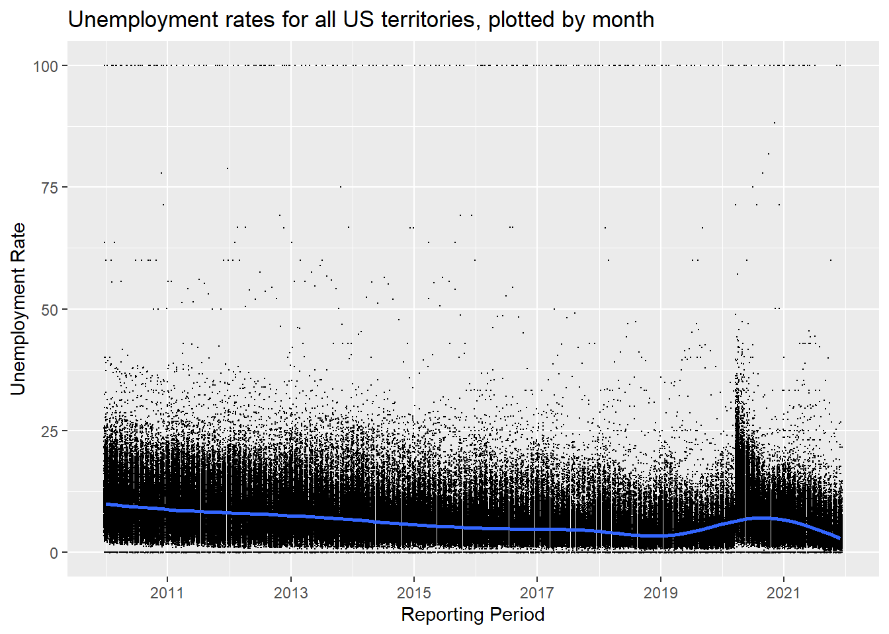
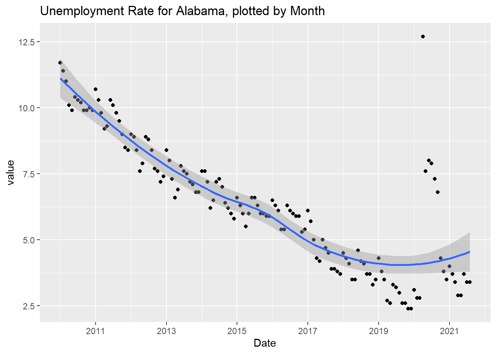

This is the first post in a series highlighting the learning process I’m going through with R. I start by installing an API, then I use the API to download data from the US Bureau of Labor Statistics website, and finish by doing two simple scatterplots using ggplot2. My code can be viewed by clicking the Code/Hide button.
In this post I’m using labor data from the US Bureau of Labor Statistics website.
Instructions on the API are found here.
Assistance finding the series numbers (the identifiers for each dataset the API pulls) are available here.
The Bureau of Labor Statistics provides an API for a few different programming languages, R being one of them.
To use the API I first had to install the API library from github using this code:
install_github("mikeasilva/blsAPI")
After that I loaded the blsAPI library along with the httr and jsonlite libraries which are for working with json files that APIs use to structure the data when it is returned.
# Install API tools: https://www.bls.gov/developers/api_r.htm
library(devtools)
# Initially I installed this API for pulling from the labor
# statistics website, but this code only needed to be run once.
# + install_github("mikeasilva/blsAPI")
library(blsAPI) # Contains the blsAPI function.
library(httr) # Needed for working with APIs.
library(jsonlite) # Needed for working with APIs.After installing and attaching the API I downloaded the serial numbers for unemployment data in the USA and saved them locally so I could paste() the identifiers together to obtain the data I wanted.
# Import the area type codes.
area_type_codes <- read.csv("https://download.bls.gov/pub/time.series/la/la.area_type", colClasses = "character", sep = "\t")
# Import the area codes.
area_codes <- read.csv("https://download.bls.gov/pub/time.series/la/la.area", colClasses = "character", sep = "\t")
# Import the measure codes.
measure_codes <- read.csv("https://download.bls.gov/pub/time.series/la/la.measure", colClasses = "character", sep = "\t")Each series code used by the API is assembled in the following fashion.
1 2
12345678901234567890
Series ID LAUCN281070000000003
Positions Value Field Name
1-2 LA Prefix
3 U Seasonal Adjustment Code
4-18 CN2810700000000 Area Code
19-20 03 Measure CodeTo use the API I had to register for an API key. Since I knew I would be posting my code online I didn’t want to post my personal API key in the code. To take care of this, I saved my key into another file in my environment and I used source() to open that file and load the key to the my_bls_key variable.
# Get API key from a filed saved in my project.
my_bls_key <- "x" # This variable will be over-ridden by the source file which also has a variable named 'my_bls_key' that contains my API key.
source("C:/Users/Home/OneDrive/R/Unemployment/BLSAPIKey.R")After saving the codes, I used them to generate the serial numbers for the data I desire.
Using the API I can only pull 50 datasets at a time. I may want more than that if I want to compare data for each state along with Washington D.C. and Puerto Rico so I use a loop that pulls as many serials as I want at a time in blocks of up to 50.
# Make a dataframe to save data to.
results <- data.frame()
# Make a dataframe to save all desired serial numbers to.
all_serials <- NA
# Load list to all_codes.
# all_serials <- area_codes$area_code[area_codes$area_type_code == 'A']
all_serials <- area_codes$area_code
all_serials <- paste('LAU',all_serials, '03', sep='')
# Calculate how many groups of 50 the list of codes will divide into.
iterations <- ceiling(length(all_serials)/50)
# Create a dataframe with 50 rows and n number of columns where
# n is the number from the variable "iterations".
serials_df <- data.frame(matrix(NA,nrow = 50, ncol = iterations))
# Fill the dataframe with the codes that should be pulled.
count_start <- 1
count_end <- 50
for (i in seq(1:iterations)){
serials_df[,i] <- all_serials[count_start:count_end]
count_start <- count_start + 50
count_end <- count_end + 50
}
# Loop through the numbers in the dataframe of codes, run the api on them, and rbind them into a dataset.
#data_df <- data.frame()
data_ls <- list()
for (i in 1:iterations) {
payload <- list('seriesid'= serials_df[,i]
,'startyear'='2010'
,'endyear'='2021'
,'registrationKey'=my_bls_key)
response <- blsAPI(payload, 2, TRUE)
response$iteration <- i
data_ls[[i]] <- response # Add the data to the list.
}
# Bind together all the values in data_ls.
results <- bind_rows(data_ls)
results <- remove_missing(results) # Remove NAs
# Add a date column to use as the x-axis variable.
results$the_date <- as.Date(paste(results$periodName, '1', results$year, sep = '/'), format = '%B/%d/ %Y')
# Change "value" column to numeric.
results$value <- as.double(results$value)These are the first six rows of the tibble (dataframe) that contain the unemployment data.
head(results)At this point, I have successfully used the API to obtain ten years worth of unemployment data in the results tibble. Before I finish, I’d like to add two graphs of the data using the ggplot function.
This graph uses geom_point in ggplot2 to show all ten years of unemployment rates in the US and PR. Each point represents the unemployment rate for a month for a state or territory of the United States. The blue line is a trend line created using ggplot2’s geom_smooth() function. One interesting data point is towards the beginning of 2020 when the unemployment rate jumped after the COVID-19 pandemic started to affect businesses in the US.
all_unemployment_data_graph <- ggplot(filter(results)) +
geom_point(
mapping = aes(x = the_date , y = value),
position = "jitter",
shape = 20,
size = .1
) +
ylab("Unemployment Rate") +
scale_x_date(name = "Reporting Period",
date_labels = "%Y",
date_breaks = "2 years") +
labs(title = "Unemployment rates for all US territories, plotted by month") +
geom_smooth(mapping = aes(x = the_date, y = value))
plot(all_unemployment_data_graph)
US Monthly Unemployment Rate, 2010 - 2021.
This graph is similar in shape to the previous graph but only shows the unemployment rates in Alabama. Another observation is the range on the y-axis is much smaller than the previous graph. The highest point for the Alabama graph is just above 12.5.
Alabama_data <- ggplot(filter(results, results$seriesID == serials_df$X1[1])) +
geom_point(mapping = aes(x = the_date, y = value)) +
geom_smooth(mapping = aes(x = the_date, y = value))+
xlab("Date") +
scale_x_date(name = "Date",
date_labels = "%Y",
date_breaks = "2 years") +
labs(title = "Unemployment Rate for Alabama, plotted by Month")
plot(Alabama_data)
Alabama Monthly Unemployment Rate, 2010 - 2021.
This section highlights some of the details that I learned while starting this project. Every project has unexpected obstacles. I’m hoping that by writing down the methods that I learned to circumvent or overcome those obstacles that I will remember them in the long-run.
I learned that it takes less processing to save all the dataframes into a list within a loop, then to use bind_rows() outside of the loop to combine them versus using rbind() within the loop to append each dataset to the existing dataframe.
I learned that xlab() and ylab() can be called outside of aes().
I learned how to use source() to call variables from other files. When source() is called, it runs the code saved in the source file. Any variables in the source file are saved into the global environment.
I learned that instead of using scale_x_continuous or scale_x_discrete I should use scale_x_date when a ggplot graph has the date on the x axis. Breaks, labels, and minor breaks can be controlled using date_breaks, date_labels, and date_minor_breaks respectively.
This post highlighted my first successful attempt to use an API to pull data from an external data soure. I also created two simple plots using ggplot2. Future posts will demonstrate the analysis of the unemployment data obtained.